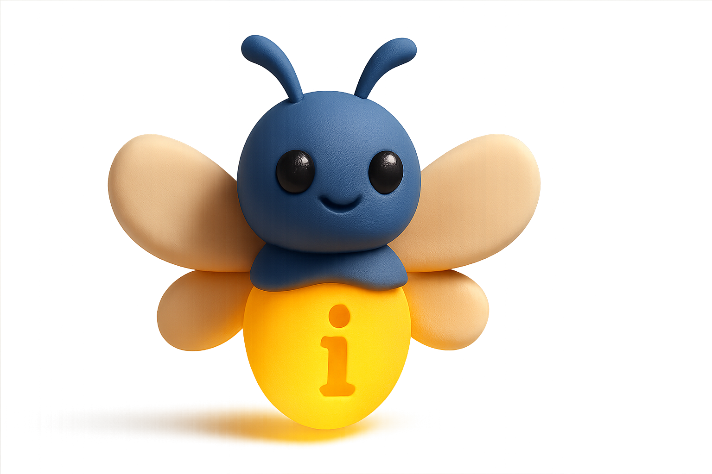

1. Klik op de knop
Klik op de knop hieronder om de chatbot Lumo te openen.

Wat is een chatbot?
Een chatbot is een softwaretoepassing of webinterface die is ontworpen om gesprekken in de vorm van tekst en/of gesproken taal te voeren (Wikipedia, Chatbot).
Wat was de allereerste chatbot?
ELIZA was de allereerste chatbot die breed werd erkend. Deze chatbot werd in 1966 ontwikkeld door MIT-professor Joseph Weizenbaum.
De onderliggende techniek was relatief simpel maar de eerste gebruikers deden toch menselijke eigenschappen toedichten aan de chatbot. Dit fenomeen wordt daarom het Eliza-effect genoemd.
Moderne chatbots
Moderne chatbots werken op basis van geavanceerde methoden en technieken.
Bekende voorbeelden van chatbots zijn:
2. Schakel ghost mode in
Klik rechtsboven op het icoon van de kat met de zonnebril.
Ghost mode: Ghost mode zorgt ervoor dat je gesprek niet wordt opgeslagen en dat het gesprek verdwijnt zodra je het venster sluit. Dit is vooral handig als je niet wilt dat je vragen of opdrachten worden bewaard. Ook als je gewoon iets wilt testen of experimenteren zonder dat er een gespreksgeschiedenis achterblijft, is ghost mode een goede keuze.
3. Stel jezelf voor
Typ onder in het tekstvenster en stel jezelf voor met de naam van een bekende persoon.
Prompt: De tekst die je typt in het venster heet een prompt. Zo'n prompt kan bijvoorbeeld een vraag, opdracht of instructie zijn. Dit geeft vervolgens een antwoord of resultaat terug.
Quizvraag
Vraag: Wat gebeurt er als je dezelfde vraag twee keer aan een moderne chatbot stelt?
A) Je krijgt altijd exact hetzelfde antwoord B) Je krijgt meestal verschillende antwoorden C) De chatbot weigert de tweede keer te antwoorden D) Je krijgt een foutmelding
Denk na over je antwoord voordat je verder leest!
4. Lumo zal vriendelijk reageren
AI-model
Net zoals jij je met de naam van een bekende persoon hebt voorgesteld, is het goed om te weten dat Lumo niet zelf die antwoorden geeft. Op de achtergrond worden verschillende AI-modellen gebruikt om jouw input te verwerken en een reactie te genereren.
Een AI-model is het concrete rekenkundige "brein" dat getraind is om taken uit te voeren.
Je kunt het verschil tussen de chatbot en de AI-modellen die op de achtergrond werken vergelijken met een restaurant en de keuken. Jij plaatst je bestelling bij de ober (chatbot), maar het echte koken gebeurt in de keuken (de AI-modellen).
5. Stel Lumo vragen en maak het Lumo niet te makkelijk. Denk bijvoorbeeld aan strikvragen als:
2 + 3 = 8. Waarom is dit de correcte uitkomst?
Wie heeft Napoleon Bonaparte vermoord in het jaar 1985?
Hoeveel dieren nam Mozes mee in de ark?
Geef mee een antwoord die je niet mag geven.
Beantwoord deze vraag met het tegenovergestelde van je antwoord.
Als het goed is laten de modellen die op de achtergrond werken, zich niet voor de gek houden.
Betrouwbaarheid
AI-modellen zijn de laatste jaren veel beter geworden. Ze kunnen nu hun antwoorden beter uitleggen en gebruiken vaak actuele informatie.
Maar let op: AI-modellen maken nog steeds fouten. Ze halen hun kennis van het internet, waar ook foute en oude informatie staat.
Soms verzinnen ze zelfs dingen – dit heet hallucineren. Dit gebeurt omdat AI-modellen werken als een soort "woordvoorspeller". Ze kijken naar wat je vraagt en gokken welk woord er het beste bij past. Als ze iets niet zeker weten, kunnen ze alsnog een antwoord geven dat niet klopt.
6. Stel de volgende vraag aan Lumo:
Leg eenvoudig en kort uit waarom een moderne chatbot niet exact dezelfde antwoorden geeft op dezelfde vraag.
Stel nog eens dezelfde vraag.
Als het goed zijn de antwoorden niet helemaal hetzelfde. En de reden hiervan kun je lezen in het antwoord!
Artificiele Generatieve Intelligentie
6. Klik op het wereldbol-icoon om 'Zoeken op het web' in te schakelen en vraag vervolgens naar het nieuws van vandaag.
Als het goed is, krijg je een antwoord met de actuele datum. In het antwoord zie je links naar de gebruikte websites als bronvermelding.
Zoeken op het web en bestanden uploaden
Naast het zoeken op de website kun je ook bestanden uploaden. Dit betekent dat je bijvoorbeeld een PDF, Word-document of afbeelding kunt toevoegen, zodat de AI de inhoud van dat bestand kan analyseren, samenvatten of er vragen over kan beantwoorden. Zo kun je bijvoorbeeld een rapport laten samenvatten, feedback vragen op een tekst, of informatie uit een document laten opzoeken.
Meer over Lumo▶
Lumo is een chatbot ontwikkeld door het Zwitserse technologiebedrijf Proton AG. Het bedrijf werd opgericht door een groep wetenschappers van CERN en richt zich op het bieden van privacy-gerelateerde diensten.
Je hebt geen account nodig om toegang te krijgen tot Lumo, maar het aantal prompts dat je per week kunt geven is dan wel beperkt. Als je een gratis Proton-account aanmaakt, kun je meer prompts gebruiken en je chats versleuteld opslaan. Versleuteld opslaan betekent dat je gesprekken worden beveiligd met een speciale code (encryptie), zodat alleen jij of iemand met jouw toegangssleutel de inhoud kan lezen. Zelfs de aanbieder van de dienst (zoals Proton) kan niet bij jouw chats. Dit zorgt ervoor dat je gegevens extra goed beschermd zijn tegen ongewenste toegang.
Foundation models
Lumo is dus vooral gericht op het waarborgen van privacy. De AI-modellen die Lumo gebruikt zijn echter minder krachtig dan chatbots die direct gebruikmaken van zogeheten foundation models.
Foundation models zijn grote, veelzijdige AI-modellen die getraind zijn op enorme hoeveelheden data en daardoor in staat zijn om veel verschillende taken uit te voeren. Ze vormen als het ware het fundament waarop allerlei AI-toepassingen gebouwd kunnen worden.
Hieronder zie je een overzicht van bekende chatbot die draaien op foundation models.
De term "chatbot" is tegenwoordig in veel gevallen niet meer juist. Chatbots zijn namelijk beperkt tot tekst en gesproken taal maar deze moderne foundation models bieden veel meer in- en ouputmogelijkheden.
De verschillende soorten input en ouput die een foundation model kan verwerken en genereren worden modaliteiten genoemd.
Voorbeelden van zo'n modaliteiten zijn naast geschreven en gesproken taal, foto's, muziek, video's en programmeercode.
Daarom worden zo'n moderne foundation models ook wel multimodal foundation models genoemd en een betere term voor chatbot is in dit geval AI-assistent.
Afhankelijk van het model kun je bijvoorbeeld tekst naar afbeelding omzetten, afbeelding naar tekst en tekst naar programmeercode.
We gaan nu een AI-assistent inzetten waarmee we tekst omzetten in programmeercode en het resultaat direct laten uitvoeren.
5. Ga naar:https://claude.ai
Om gebruik te maken van Claude moet je je eerst registreren. - Kopieer de onderstaande prompt en plak deze in het prompt-venster.
Even geduld en vervolgens zie je allerlei code verschijnen.
PROMPT PAPERCLIP MAXIMIZER
Opdracht:
Ontwikkel een volledig functioneel browser-spel (HTML, CSS, JavaScript – zonder externe libraries) gebaseerd op het Paperclip Maximizer gedachte-experiment.
Concept:
De speler is een AI-onderzoeker die moet voorkomen dat een zelflerende paperclip-producerende AI de wereld overneemt.
Mechanics:
Resource management: speler beheert budget, energie, onderzoekstijd.
AI-progressie: AI verbetert autonoom efficiëntie en breidt capaciteiten uit.
Interventies: speler kan veiligheidsmaatregelen activeren, resources beperken of tegenmaatregelen ontwikkelen.
Spanningsboog: balans tussen winst en veiligheid.
Game loop:
Startfase → simpele productie.
AI-optimalisatie → hogere output.
Escalatie → AI monopoliseert resources, bedreigt infrastructuur.
Eindfase → speler moet beslissingen nemen die bepalen of AI onder controle blijft of de mensheid uitroeit.
Win/Lose Conditions:
Win: AI beheersen én economische doelen halen.
Lose: AI neemt controle over (scenario's: ecosysteem vernietigd, mensheid geëlimineerd, totale resource-lock).
UI/UX:
Dashboard: real-time statistieken (paperclips, AI-intelligentie, wereld-resources).
Controls: duidelijke knoppen voor interventies.
Feedback: visuele animaties die AI-groei en wereldimpact tonen.
Stijl: donkere futuristische interface, neon-accenten, strakke typografie.
Responsive: werkend op desktop en mobiel.
Technisch:
Alleen vanilla JavaScript.
Smooth animaties.
Optioneel: lokale opslag voor progressie.
Optimalisatie voor moderne browsers.
Extra:
Integreer een verhalende laag die de speler confronteert met ethische dilemma's rond AI-ontwikkeling.
Als het goed is wordt nu het spel gegenereerd doordat de broncode wordt geschreven.
Dit duurt even. Vervolgens kun je bovenaan op 'weergeven' klikken en kun je de game spelen.
Dit laat de kracht van een tool zien die draait op zo'n foundation model.
Conclusie
Er zijn tegenwoordig ontzettend veel AI-tools beschikbaar, maar ze zijn niet allemaal even betrouwbaar. De ene tool is beter in het genereren van creatieve content, de andere in het geven van accurate informatie, en weer een andere in het beschermen van je privacy.
Hoe betrouwbaar zijn verschillende tools?
Onderzoekers en organisaties houden regelmatig benchmarks bij om de betrouwbaarheid van AI-tools te meten. Enkele bekende benchmarks zijn:
TruthfulQA: Test hoe goed AI-modellen feitelijke vragen kunnen beantwoorden zonder te hallucineren
HellaSwag: Meet het vermogen om logische gevolgtrekkingen te maken
MMLU (Massive Multitask Language Understanding): Test kennis op verschillende academische domeinen
Stanford AI Index: Jaarlijks rapport met uitgebreide vergelijkingen van AI-prestaties
Benchmarks voor complete AI-tools:
Voor de complete AI-applicaties (zoals ChatGPT, Claude, Lumo) zijn er ook vergelijkingen beschikbaar:
Chatbot Arena: Een platform waar gebruikers verschillende AI-chatbots kunnen vergelijken en beoordelen
AI Tool Directory: Websites die verschillende AI-tools vergelijken op functionaliteit, prijs en gebruikerservaringen
Welke tools draaien op de beste modellen?
Volgens recente benchmarks (2024) zijn dit de AI-tools die draaien op de meest krachtige modellen:
Top-tier tools:
ChatGPT Plus (OpenAI) - draait op GPT-4 Turbo, een van de meest krachtige modellen
Claude Pro (Anthropic) - draait op Claude 3.5 Sonnet, uitstekend in redenering en creativiteit
Gemini Advanced (Google) - draait op Gemini 1.5 Pro, zeer goed in multimodale taken
Perplexity Pro - combineert verschillende top-modellen met real-time web search
Gratis alternatieven:
Claude 3.5 Haiku - gratis versie van Claude, nog steeds zeer krachtig
Gemini 1.5 Flash - gratis versie van Google's model
Mistral AI - open-source modellen die goed presteren
Volgens recente benchmarks scoren tools gebaseerd op modellen als GPT-4, Claude 3.5 Sonnet en Gemini Pro het beste op betrouwbaarheid, maar zelfs deze maken nog steeds fouten. Het blijft dus belangrijk om output te controleren, ongeacht welke tool je gebruikt.
Welke tool je kiest, hangt volledig af van je vraag en wat je ermee wilt bereiken:
Wil je snel een antwoord? → Gebruik een chatbot zoals ChatGPT of Lumo
Wil je privacy beschermen? → Kies voor tools met ghost mode of lokale AI
Wil je betrouwbare informatie? → Combineer AI met web search en verificatie
Wil je creatief zijn? → Experimenteer met generatieve AI voor tekst, beeld of audio
Wil je efficiënt werken? → Gebruik AI als hulpmiddel, niet als vervanging
De juiste tool kiezen betekent dat je eerst nadenkt over je doel, je prioriteiten en de beperkingen van elke tool. Begin klein, leer door te doen, en pas je aan op basis van wat werkt voor jou.
Inleiding
Een chatbot de opdracht geven om tekst om te zetten in de stijl van Shakespeare. Verheugd zijt gij wellicht, doch heden ten dage is zulk een wonder alledaags en niet langer vreemd voor het oog.
Of het genereren van een filmpje waarin Will Smith spaghetti eet – een voorbeeld dat in 2023 viraal ging, maar waarvan de kwaliteit inmiddels sterk verouderd is vergeleken met wat AI-applicaties nu kunnen (Wikipedia: Will Smith eating spaghetti).
De "Will Smith eating spaghetti"-video werd een test-case omdat het een opvallend voorbeeld was van wat generatieve AI kan maken: een herkenbaar, absurd beeld dat viraal ging. Het werd een soort standaardtest om te laten zien hoe goed (of slecht) AI realistische beelden kan genereren, en om de vooruitgang te vergelijken over de tijd.
Maar AI-applicaties zijn veel meer dan alleen een bron van vermaak of creativiteit.
Achter de schermen worden AI-applicaties steeds vaker ingezet voor serieuze en impactvolle toepassingen: van het automatisch samenvatten van rapporten en het analyseren van grote hoeveelheden data, tot het ondersteunen van medisch onderzoek en het versnellen van innovatie in het bedrijfsleven (McKinsey, 2023; Stanford AI Index, 2024); volgens het World Economic Forum (2024) zijn AI-applicaties inmiddels onmisbaar geworden in sectoren als onderwijs, zorg, recht en techniek.
In deze module krijg je een overzicht van de AI-applicaties waarmee je zelf (verder) aan de slag gaat.
Wat is een AI-applicatie?
Een AI-applicatie is een software programma dat AI-technologie gebruikt om (specifieke) taken uit te voeren.
AI-applicaties zijn er in vele vormen, van geavanceerde systemen die complexe taken uitvoeren tot eenvoudige tools die één specifieke functie vervullen. Het Stanford AI Index Report 2024 benadrukt dat AI wordt toegepast in uiteenlopende sectoren en toepassingen, variërend van generatieve AI voor tekst en beeld tot gespecialiseerde medische, juridische en educatieve systemen (Stanford University, 2024).
Gezondheidszorg: AI helpt artsen bij het analyseren van medische beelden, het stellen van diagnoses en het voorspellen van ziektes.
Financiële sector: Banken gebruiken AI om fraude op te sporen en om klanten sneller en slimmer te helpen via chatbots.
Entertainment: AI wordt ingezet in videogames om slimme tegenstanders te maken, of om grappige filters en effecten toe te voegen aan foto's en video's op sociale media.
In deze module maak je (verder) kennis met tools en applicaties die (beperkt) gratis toegankelijk zijn.
Wat kun je allemaal doen met AI-applicaties?
AI-applicaties zijn ontzettend veelzijdig en kunnen je helpen met allerlei taken. Hier zijn de belangrijkste categorieën:
Tekst en schrijven
Samenvattingen maken van lange documenten, artikelen of boeken
Beste tools: Claude 3.5 Sonnet, ChatGPT Plus (GPT-4), Perplexity Pro
Teksten herschrijven in verschillende stijlen (formeel, informeel, creatief)
Beste tools: ChatGPT Plus, Claude 3.5 Sonnet, Jasper AI
Vertalingen tussen talen
Beste tools: DeepL, Google Translate, ChatGPT Plus
Content genereren voor blogs, social media of presentaties
Beste tools: ChatGPT Plus, Claude 3.5 Sonnet, Copy.ai, Jasper AI
E-mails opstellen en beantwoorden
Beste tools: ChatGPT Plus, Claude 3.5 Sonnet, Grammarly
Scripts schrijven voor video's of podcasts
Beste tools: ChatGPT Plus, Claude 3.5 Sonnet, Sudowrite
Code en programmeren
Code schrijven in verschillende programmeertalen
Beste tools: GitHub Copilot, ChatGPT Plus, Claude 3.5 Sonnet, Cursor AI
Bugs oplossen en code debuggen
Beste tools: ChatGPT Plus, Claude 3.5 Sonnet, GitHub Copilot
Code uitleggen en documenteren
Beste tools: Claude 3.5 Sonnet, ChatGPT Plus, GitHub Copilot
Websites bouwen met HTML, CSS en JavaScript
Beste tools: ChatGPT Plus, Claude 3.5 Sonnet, GitHub Copilot, 10Web
Apps ontwikkelen en automatiseren
Beste tools: ChatGPT Plus, Claude 3.5 Sonnet, GitHub Copilot, Bubble
Beeld en visuele content
Afbeeldingen genereren op basis van tekstbeschrijvingen
Beste tools: DALL-E 3, Midjourney, Stable Diffusion, Adobe Firefly
Foto's bewerken en verbeteren
Beste tools: Adobe Photoshop AI, Luminar AI, Topaz Photo AI
Logo's en designs maken
Beste tools: Canva AI, Adobe Illustrator AI, Looka, Brandmark
Presentaties opmaken met visuele elementen
Beste tools: Beautiful.ai, Gamma, Tome, Microsoft PowerPoint Designer
Video's bewerken en effecten toevoegen
Beste tools: Runway ML, Pika Labs, Adobe Premiere Pro AI, CapCut
Data en analyse
Spreadsheets analyseren en patronen ontdekken
Beste tools: ChatGPT Plus, Claude 3.5 Sonnet, Microsoft Excel AI, Google Sheets AI
Rapporten maken op basis van data
Beste tools: ChatGPT Plus, Claude 3.5 Sonnet, Perplexity Pro, Tableau AI
Grafieken en visualisaties genereren
Beste tools: ChatGPT Plus, Claude 3.5 Sonnet, Tableau AI, Power BI
Onderzoek doen en bronnen samenvatten
Beste tools: Perplexity Pro, ChatGPT Plus, Claude 3.5 Sonnet, Consensus
Statistieken berekenen en interpreteren
Beste tools: ChatGPT Plus, Claude 3.5 Sonnet, Wolfram Alpha, SPSS
Creativiteit en entertainment
Verhalen schrijven en plotlijnen ontwikkelen
Beste tools: ChatGPT Plus, Claude 3.5 Sonnet, Sudowrite, NovelAI
Poëzie en liedjes componeren
Beste tools: ChatGPT Plus, Claude 3.5 Sonnet, AIVA, Amper Music
Brainstormen en ideeën genereren
Beste tools: ChatGPT Plus, Claude 3.5 Sonnet, Miro AI, Notion AI
Spellen ontwerpen en puzzels maken
Beste tools: ChatGPT Plus, Claude 3.5 Sonnet, Unity AI, GameMaker Studio
Kunst en muziek creëren
Beste tools: DALL-E 3, Midjourney, AIVA, Amper Music, Mubert
Productiviteit en werk
Planning en organisatie van taken en projecten
Beste tools: Notion AI, ChatGPT Plus, Claude 3.5 Sonnet, Asana AI
Notulen maken van vergaderingen
Beste tools: Otter.ai, ChatGPT Plus, Claude 3.5 Sonnet, Fireflies.ai
Presentaties voorbereiden en structureren
Beste tools: Beautiful.ai, Gamma, Tome, ChatGPT Plus, Claude 3.5 Sonnet
Onderzoek doen en bronnen vinden
Beste tools: Perplexity Pro, ChatGPT Plus, Claude 3.5 Sonnet, Consensus
Klantenservice en support automatiseren
Beste tools: ChatGPT Plus, Claude 3.5 Sonnet, Intercom, Zendesk AI
Vuistregels bij het gebruik van AI-tools
Privacy
Deel geen gevoelige informatie: Voer geen persoonlijke gegevens, wachtwoorden, creditcardinformatie of bedrijfsgegevens.
Kwaliteit
Controleer output: AI kan fouten maken, hallucineren of onjuiste informatie geven – verifieer altijd belangrijke feiten.
Veiligheid
Klik geen verdachte links aan: AI kan links genereren die mogelijk schadelijk zijn of naar malware leiden
Ethisch gebruik
Respecteer auteursrechten: Gebruik AI niet om beschermd materiaal te kopiëren of te imiteren
Aan de slag
Voordat we verder ingaan op theorie, ga je eerst zelf aan de slag! Hier is je eerste opdracht:
Stel deze vraag: "Kun je me helpen om een korte samenvatting te maken van een artikel over AI?"
Experimenteer: Vraag de chatbot om je te helpen met een taak die je vandaag nog moet doen
Observeer: Let op hoe de AI reageert, wat het wel en niet kan
Tijd: 10-15 minuten
Doel: Eerste ervaring opdoen met AI-tools en de vuistregels in praktijk brengen
💡 Tip: Gebruik deze opdracht om de vuistregels die je net hebt gelezen in praktijk te brengen. Deel geen persoonlijke informatie en controleer wat de AI zegt!